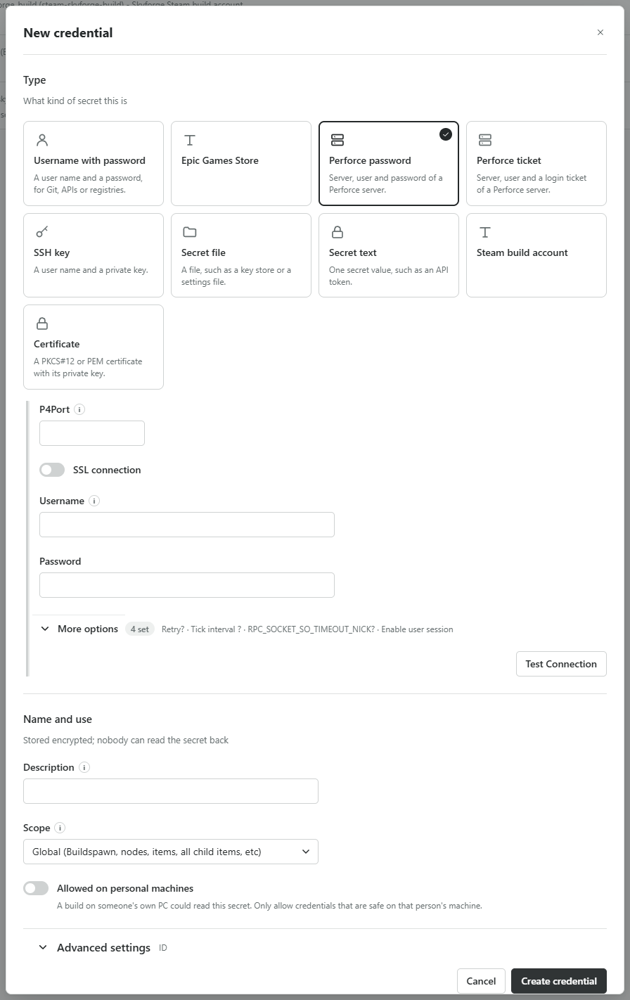

Perforce connections
A connection is a stored Perforce credential: the server address, the user and a password or ticket, kept encrypted and never shown.
When to use it
Every Perforce root, Perforce Software setting and Perforce operations step signs in through a credential. Make one credential per build user. The same page also covers Administrator connections, which let a few steps do admin work, and the Perforce variables a build gets (P4_PORT, P4_USER, P4_CLIENT, P4_TICKET). See Perforce variables for those.
How to set it up
- Open the credentials page where the credential should be visible: the project's, or the server's under Manage Buildspawn › Credentials.
- Click Add credentials and choose Perforce Password Credential or Perforce Ticket Credential.
- Fill in the fields below.
- Click Test Connection (administrators only). Fix any error.
- Click Create.

You can also add a credential from the root form: the Credential picker has an Add button. The connection page of a build configuration (Perforce connection tab) shows the server and user in use and checks that they work.
Every field
| Field | What it does | Default | Example |
|---|---|---|---|
| ID, Description | The name you pick this credential by. | Generated | helix-buildbot |
| P4Port | Host and port of the server. Do not type ssl:; use the checkbox. | perforce.studio.example:1666 | |
| SSL connection | Use SSL. | Off | On |
| Trust | With SSL: the fingerprint of the server's certificate. Optional if the server has a CA certificate. Test Connection shows the fingerprint the first time. | 7A:B3:... | |
| Username | The Perforce user for builds. It needs at least the open protection level. | buildbot | |
| Password (password credential) | The user's password. | ||
| Login with ticket value / Ticket (ticket credential) | A valid session ticket. Make one with p4 -u buildbot -p perforce:1666 login -ap. The -a lets it work from any machine. | ||
| Use P4TICKETS file / P4TICKETS (ticket credential) | The full path of a tickets file on the agent. | C:\Users\build\p4tickets.txt | |
| All Hosts (advanced, password) | Ask for a ticket that works on all hosts. | Off | |
| Retry (advanced) | How many times to retry a connection or task. The wait grows with each try (n squared seconds). | 0 | 3 |
| Tick interval (ms) (advanced) | A waiting message goes to the log after this long, so long commands do not look stuck. 0 turns it off. | 0 | 30000 |
| RPC_SOCKET_SO_TIMEOUT_NICK (advanced) | Read and write timeout of the connection in milliseconds. 0 turns timeouts off. | 0 | |
| P4HOST (advanced) | Host name to pretend to be. | ||
| Enable user session, Minimum session life (advanced) | Caches the user and ticket expiry. While the ticket has at least this much life left, no login check is done. | Off, 0 |
Administrator connections
Some work needs more rights than a build user has: removing a workspace another user owns, or a custom command. An Administrator connection is a connection with admin or super access, defined with the root. On the roots page, Administrator Access opens the list. An administrator must also turn on Allow Administrator connection in the Perforce operations settings, and the person who sets up a step needs the Perforce permission Use administrator connection. See Perforce operations.
A worked example
Skyforge has one build user buildbot. An administrator adds a Perforce Ticket Credential with ID helix-buildbot, P4Port perforce.studio.example:1666, SSL on, Trust set, the ticket from p4 login -ap, and a Tick interval of 30000. All roots of the Game project use it.
What you see when it runs
The log of a Perforce operation starts with P4: buildbot@ssl:perforce.studio.example:1666 (...). The password and the ticket never appear. If a secret would be printed, it is replaced by ********.
Problems and fixes
| You see | What to do |
|---|---|
| The password or ticket is rejected | Buildspawn shows the problem on the build configuration page and in its settings. Update the credential. Tickets expire: make one with -a and a long-lived user. |
| SSL trust error | Click Test Connection to get the fingerprint, and paste it into Trust. |
| The credential is not in the picker | It must be defined on the same project as the root, or above. |